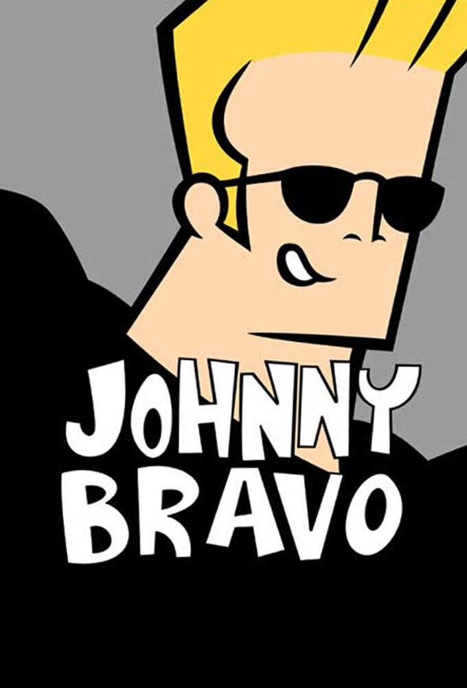
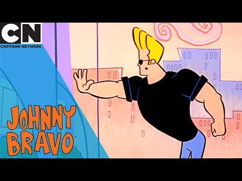
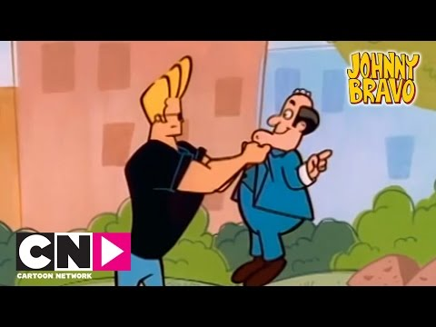
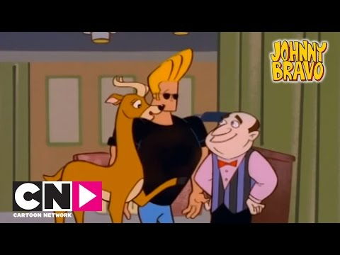

Johnny Bravo




Details
My notes
Johnny Bravo.
About the show
A Cartoon Network animated comedy created by Van Partible. The series began in 1997.
What happens in it
Johnny has a blond quiff, sunglasses, a black shirt, and a very high opinion of himself. His attempts to impress people repeatedly backfire, driving the show’s physical comedy.
Memory status
Added by name. My viewing years, language, channel, and favourite episodes have not been recorded yet.